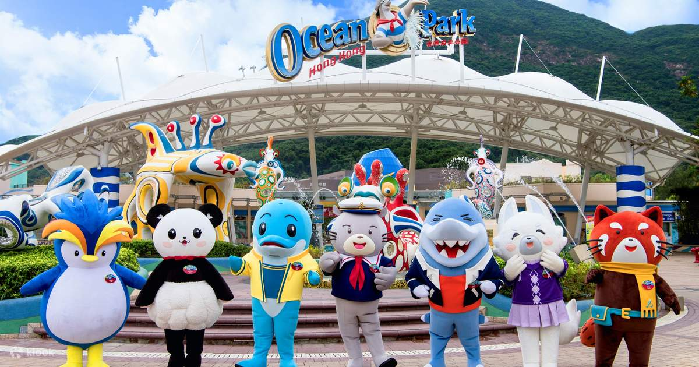
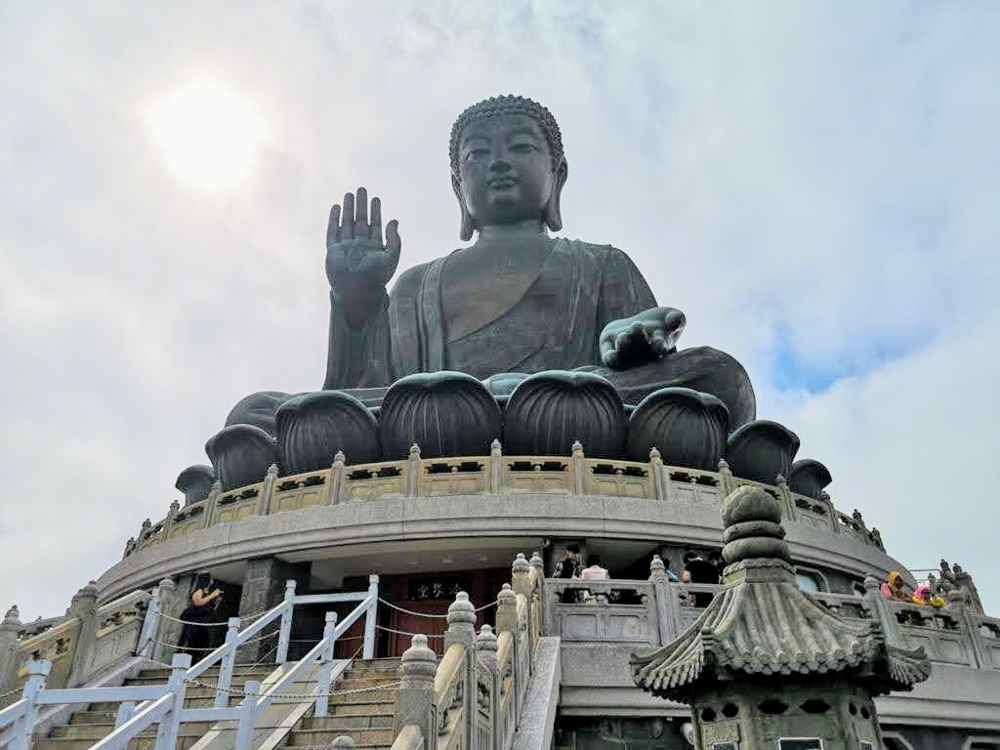

Hong Kong Disneyland

Have a day full of recreation at one of the most revered places to visit in Hong Kong, Disneyland. This is one of the largest theme parks where you can live your childhood dreams and explore the 7 lands it owns, namely Adventureland, Grizzly Gulch, Mystic Point, Toy Story Land, Fantasyland, Tomorrowland, and Main Street, U.S.A.
Ocean Park
Tour the marine-life based theme park in Hong Kong and add a tinge of thrill to your day with these rides. Sprawling at an area of 9,15,000 meter square this is one of the best tourist places in Hong Kong for a rejuvenating day. The park features two main attractions the Summit and the Wavefront and is connected by a cable car and the ocean express train.
Victoria Peak

Snuggled in the western region of Hong Kong Island, Victoria Peak is a quaint little peak that is known for its beauty. It is also known as Mount Austin and has an elevation of almost 552 m above the ground level. From this place, wherever you stretch the eyes, all you will find is the skyscrapers and the trails of lush green which make up this upland.
Big Buddha (Tian Tan Buddha Statue)
Standing tall at the height of 34 m, Tian Tan Buddha Statue is a mighty statue of Buddha Shakyamuni and is located near Po Lin Monastery. This is one of the most serene places to visit in Hong Kong and symbolizes the harmonious relationship between man and nature. You will have to trace a total of 268 steps to reach out to this mighty bronze statue which is made up of 202 pieces.
Victoria Harbour

Separating the Kowloon Peninsula and Hong Kong Island, Victoria Harbour is one of the most beautiful tourist places in Hong Kong. The site boasts with the deep waters, and its strategic location makes it a trading center. Here you can witness annual fireworks, and the serenade is just beyond one's imagination.